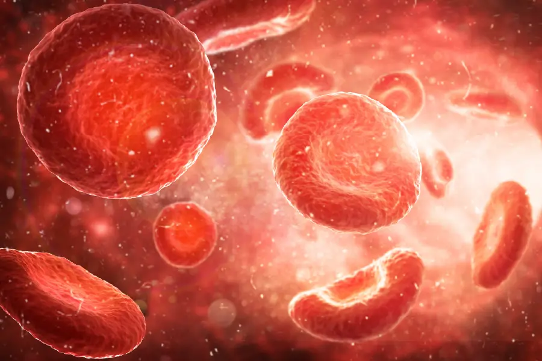
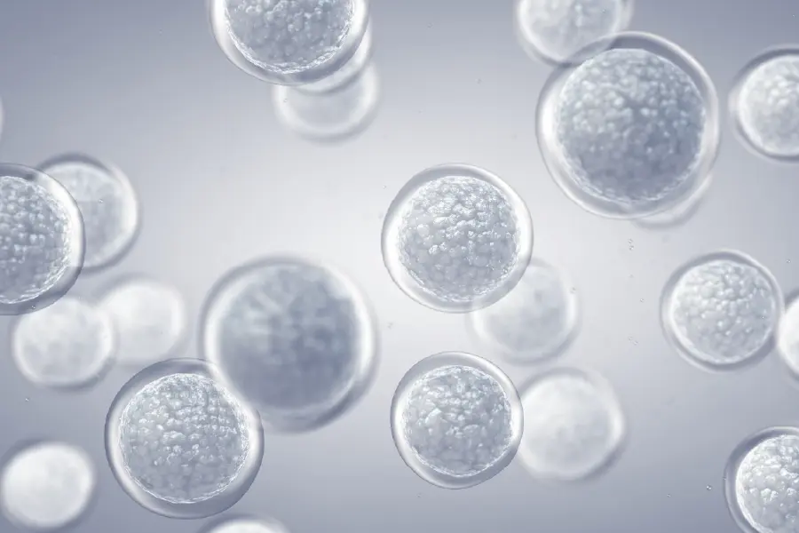

Using haematopoietic stem cells (from cord blood) and mesenchymal stem cells (from placenta, cord tissue and adipose tissue), we offer a range of treatments to fit your medical needs. These stem cells offer potentially life-saving treatment options for people traditional medicine cannot assist.

HSCs are used for treating disorders of the circulatory and immune systems because they specialize into blood cells. They are most commonly used to treat a range of anaemias, cancers and congenital immune system issues.

MSCs can specialize into any cell type making them useful in treating an incredibly wide range of diseases. There is strong evidence to show that MSCs are ideal treatments for incurable disorders like multiple sclerosis, systemic lupus erythematosus, Parkinson’s disease, diabetes, and cystic fibrosis… among others.